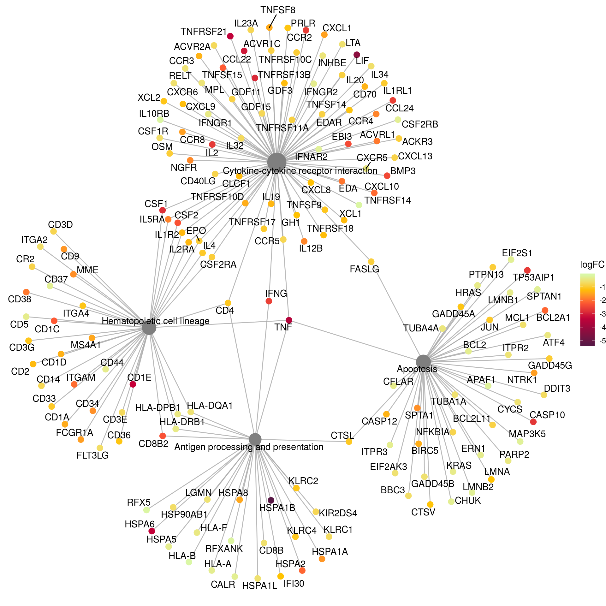

epistasis
aluetge
2019-07-26
Last updated: 2020-09-13
Checks: 6 1
Knit directory: transcriptome_cll/
This reproducible R Markdown analysis was created with workflowr (version 1.4.0). The Checks tab describes the reproducibility checks that were applied when the results were created. The Past versions tab lists the development history.
The R Markdown file has unstaged changes. To know which version of the R Markdown file created these results, you’ll want to first commit it to the Git repo. If you’re still working on the analysis, you can ignore this warning. When you’re finished, you can run wflow_publish to commit the R Markdown file and build the HTML.
Great job! The global environment was empty. Objects defined in the global environment can affect the analysis in your R Markdown file in unknown ways. For reproduciblity it’s best to always run the code in an empty environment.
The command set.seed(20190511) was run prior to running the code in the R Markdown file. Setting a seed ensures that any results that rely on randomness, e.g. subsampling or permutations, are reproducible.
Great job! Recording the operating system, R version, and package versions is critical for reproducibility.
Nice! There were no cached chunks for this analysis, so you can be confident that you successfully produced the results during this run.
Great job! Using relative paths to the files within your workflowr project makes it easier to run your code on other machines.
Great! You are using Git for version control. Tracking code development and connecting the code version to the results is critical for reproducibility. The version displayed above was the version of the Git repository at the time these results were generated.
Note that you need to be careful to ensure that all relevant files for the analysis have been committed to Git prior to generating the results (you can use wflow_publish or wflow_git_commit). workflowr only checks the R Markdown file, but you know if there are other scripts or data files that it depends on. Below is the status of the Git repository when the results were generated:
Ignored files:
Ignored: .Rhistory
Ignored: .Rproj.user/
Ignored: output/figures/r_objects/BRAF/enrichment/
Untracked files:
Untracked: analysis/methylation_epistasis.Rmd
Untracked: docs/figure/methylation_epistasis.Rmd/
Untracked: output/desRes_250720.RData
Untracked: output/diff_meth_IP_vs_HP_LP.rds
Untracked: output/figures/paper_fig/figure1/
Untracked: output/figures/paper_fig/figure_IGHV/
Untracked: output/figures/paper_fig/figure_c1c2.pdf
Untracked: output/figures/paper_fig/figure_c1c2.svg
Untracked: output/figures/paper_fig/figure_c1c2/
Untracked: output/figures/paper_fig/figure_epi/
Untracked: output/figures/paper_fig/figure_epi_meth.pdf
Untracked: output/figures/paper_fig/figure_epi_meth.svg
Untracked: output/figures/paper_fig/figure_variants_mut_load.pdf
Untracked: output/figures/paper_fig/figure_variants_mut_load.svg
Untracked: output/figures/r_objects/Methylation_IP/de_genes/AACSP1.rds
Untracked: output/figures/r_objects/Methylation_IP/de_genes/ADAMTS7.rds
Untracked: output/figures/r_objects/Methylation_IP/de_genes/ADGRB2.rds
Untracked: output/figures/r_objects/Methylation_IP/de_genes/AKAP12.rds
Untracked: output/figures/r_objects/Methylation_IP/de_genes/ANGPT2.rds
Untracked: output/figures/r_objects/Methylation_IP/de_genes/ANKRD62.rds
Untracked: output/figures/r_objects/Methylation_IP/de_genes/ARHGAP22.rds
Untracked: output/figures/r_objects/Methylation_IP/de_genes/ASAP3.rds
Untracked: output/figures/r_objects/Methylation_IP/de_genes/BCL7A.rds
Untracked: output/figures/r_objects/Methylation_IP/de_genes/BDKRB2.rds
Untracked: output/figures/r_objects/Methylation_IP/de_genes/BTBD16.rds
Untracked: output/figures/r_objects/Methylation_IP/de_genes/C10orf10.rds
Untracked: output/figures/r_objects/Methylation_IP/de_genes/C10orf35.rds
Untracked: output/figures/r_objects/Methylation_IP/de_genes/C14orf132.rds
Untracked: output/figures/r_objects/Methylation_IP/de_genes/C1orf106.rds
Untracked: output/figures/r_objects/Methylation_IP/de_genes/CACHD1.rds
Untracked: output/figures/r_objects/Methylation_IP/de_genes/CACNB2.rds
Untracked: output/figures/r_objects/Methylation_IP/de_genes/CAMP.rds
Untracked: output/figures/r_objects/Methylation_IP/de_genes/CECR2.rds
Untracked: output/figures/r_objects/Methylation_IP/de_genes/CHL1.rds
Untracked: output/figures/r_objects/Methylation_IP/de_genes/CHMP4C.rds
Untracked: output/figures/r_objects/Methylation_IP/de_genes/CHST3.rds
Untracked: output/figures/r_objects/Methylation_IP/de_genes/CLEC2B.rds
Untracked: output/figures/r_objects/Methylation_IP/de_genes/CLEC9A.rds
Untracked: output/figures/r_objects/Methylation_IP/de_genes/CMPK2.rds
Untracked: output/figures/r_objects/Methylation_IP/de_genes/CNPY1.rds
Untracked: output/figures/r_objects/Methylation_IP/de_genes/CNR1.rds
Untracked: output/figures/r_objects/Methylation_IP/de_genes/COBLL1.rds
Untracked: output/figures/r_objects/Methylation_IP/de_genes/COL1A2.rds
Untracked: output/figures/r_objects/Methylation_IP/de_genes/CORO2B.rds
Untracked: output/figures/r_objects/Methylation_IP/de_genes/CPNE8.rds
Untracked: output/figures/r_objects/Methylation_IP/de_genes/CPXM1.rds
Untracked: output/figures/r_objects/Methylation_IP/de_genes/CRY1.rds
Untracked: output/figures/r_objects/Methylation_IP/de_genes/CSGALNACT1.rds
Untracked: output/figures/r_objects/Methylation_IP/de_genes/CSMD1.rds
Untracked: output/figures/r_objects/Methylation_IP/de_genes/DGKH.rds
Untracked: output/figures/r_objects/Methylation_IP/de_genes/DPP4.rds
Untracked: output/figures/r_objects/Methylation_IP/de_genes/DPY19L2.rds
Untracked: output/figures/r_objects/Methylation_IP/de_genes/DPYD-AS1.rds
Untracked: output/figures/r_objects/Methylation_IP/de_genes/DUOXA2.rds
Untracked: output/figures/r_objects/Methylation_IP/de_genes/EBF1.rds
Untracked: output/figures/r_objects/Methylation_IP/de_genes/EFNA2.rds
Untracked: output/figures/r_objects/Methylation_IP/de_genes/EGLN3.rds
Untracked: output/figures/r_objects/Methylation_IP/de_genes/FAIM2.rds
Untracked: output/figures/r_objects/Methylation_IP/de_genes/FAM20C.rds
Untracked: output/figures/r_objects/Methylation_IP/de_genes/FBXO27.rds
Untracked: output/figures/r_objects/Methylation_IP/de_genes/FGFR1.rds
Untracked: output/figures/r_objects/Methylation_IP/de_genes/FIRRE.rds
Untracked: output/figures/r_objects/Methylation_IP/de_genes/FKBP10.rds
Untracked: output/figures/r_objects/Methylation_IP/de_genes/FRMD4B.rds
Untracked: output/figures/r_objects/Methylation_IP/de_genes/FRMPD1.rds
Untracked: output/figures/r_objects/Methylation_IP/de_genes/FXYD6.rds
Untracked: output/figures/r_objects/Methylation_IP/de_genes/GGT2.rds
Untracked: output/figures/r_objects/Methylation_IP/de_genes/GGT3P.rds
Untracked: output/figures/r_objects/Methylation_IP/de_genes/GLDN.rds
Untracked: output/figures/r_objects/Methylation_IP/de_genes/GPR34.rds
Untracked: output/figures/r_objects/Methylation_IP/de_genes/GPSM1.rds
Untracked: output/figures/r_objects/Methylation_IP/de_genes/GTSF1L.rds
Untracked: output/figures/r_objects/Methylation_IP/de_genes/HAR1B.rds
Untracked: output/figures/r_objects/Methylation_IP/de_genes/HNRNPA1P57.rds
Untracked: output/figures/r_objects/Methylation_IP/de_genes/HTRA3.rds
Untracked: output/figures/r_objects/Methylation_IP/de_genes/IFI44L.rds
Untracked: output/figures/r_objects/Methylation_IP/de_genes/IFNA14.rds
Untracked: output/figures/r_objects/Methylation_IP/de_genes/IFNA21.rds
Untracked: output/figures/r_objects/Methylation_IP/de_genes/IFNB1.rds
Untracked: output/figures/r_objects/Methylation_IP/de_genes/IFNW1.rds
Untracked: output/figures/r_objects/Methylation_IP/de_genes/IFNWP9.rds
Untracked: output/figures/r_objects/Methylation_IP/de_genes/IGHV2-5.rds
Untracked: output/figures/r_objects/Methylation_IP/de_genes/IGHV3-15.rds
Untracked: output/figures/r_objects/Methylation_IP/de_genes/IGHV3-48.rds
Untracked: output/figures/r_objects/Methylation_IP/de_genes/IGHV3-7.rds
Untracked: output/figures/r_objects/Methylation_IP/de_genes/IGHV4-34.rds
Untracked: output/figures/r_objects/Methylation_IP/de_genes/IGKV1-16.rds
Untracked: output/figures/r_objects/Methylation_IP/de_genes/IGKV1-8.rds
Untracked: output/figures/r_objects/Methylation_IP/de_genes/IGKV2-24.rds
Untracked: output/figures/r_objects/Methylation_IP/de_genes/IGKV3-11.rds
Untracked: output/figures/r_objects/Methylation_IP/de_genes/IGKV3D-15.rds
Untracked: output/figures/r_objects/Methylation_IP/de_genes/IGKV4-1.rds
Untracked: output/figures/r_objects/Methylation_IP/de_genes/IGLC7.rds
Untracked: output/figures/r_objects/Methylation_IP/de_genes/IGLV2-14.rds
Untracked: output/figures/r_objects/Methylation_IP/de_genes/IGLV3-9.rds
Untracked: output/figures/r_objects/Methylation_IP/de_genes/INA.rds
Untracked: output/figures/r_objects/Methylation_IP/de_genes/INSR.rds
Untracked: output/figures/r_objects/Methylation_IP/de_genes/IQSEC3.rds
Untracked: output/figures/r_objects/Methylation_IP/de_genes/JUP.rds
Untracked: output/figures/r_objects/Methylation_IP/de_genes/KALRN.rds
Untracked: output/figures/r_objects/Methylation_IP/de_genes/KANK2.rds
Untracked: output/figures/r_objects/Methylation_IP/de_genes/KCNJ2-AS1.rds
Untracked: output/figures/r_objects/Methylation_IP/de_genes/KCNJ2.rds
Untracked: output/figures/r_objects/Methylation_IP/de_genes/KCNK9.rds
Untracked: output/figures/r_objects/Methylation_IP/de_genes/KIAA0895.rds
Untracked: output/figures/r_objects/Methylation_IP/de_genes/KLK4.rds
Untracked: output/figures/r_objects/Methylation_IP/de_genes/KRT19P2.rds
Untracked: output/figures/r_objects/Methylation_IP/de_genes/L3MBTL4.rds
Untracked: output/figures/r_objects/Methylation_IP/de_genes/LDOC1.rds
Untracked: output/figures/r_objects/Methylation_IP/de_genes/LINC00930.rds
Untracked: output/figures/r_objects/Methylation_IP/de_genes/LINC00982.rds
Untracked: output/figures/r_objects/Methylation_IP/de_genes/LINC01033.rds
Untracked: output/figures/r_objects/Methylation_IP/de_genes/LINC01866.rds
Untracked: output/figures/r_objects/Methylation_IP/de_genes/LINC02170.rds
Untracked: output/figures/r_objects/Methylation_IP/de_genes/LPL.rds
Untracked: output/figures/r_objects/Methylation_IP/de_genes/LRMDA.rds
Untracked: output/figures/r_objects/Methylation_IP/de_genes/LRP5.rds
Untracked: output/figures/r_objects/Methylation_IP/de_genes/LYPD6B.rds
Untracked: output/figures/r_objects/Methylation_IP/de_genes/MAPK4.rds
Untracked: output/figures/r_objects/Methylation_IP/de_genes/MAST4.rds
Untracked: output/figures/r_objects/Methylation_IP/de_genes/MCRIP2P1.rds
Untracked: output/figures/r_objects/Methylation_IP/de_genes/MOCOS.rds
Untracked: output/figures/r_objects/Methylation_IP/de_genes/MRO.rds
Untracked: output/figures/r_objects/Methylation_IP/de_genes/MTMR11.rds
Untracked: output/figures/r_objects/Methylation_IP/de_genes/MYL12BP2.rds
Untracked: output/figures/r_objects/Methylation_IP/de_genes/MYL9.rds
Untracked: output/figures/r_objects/Methylation_IP/de_genes/MYLK-AS2.rds
Untracked: output/figures/r_objects/Methylation_IP/de_genes/MYLK.rds
Untracked: output/figures/r_objects/Methylation_IP/de_genes/MYO3A.rds
Untracked: output/figures/r_objects/Methylation_IP/de_genes/NAP1L2.rds
Untracked: output/figures/r_objects/Methylation_IP/de_genes/NCAPGP1.rds
Untracked: output/figures/r_objects/Methylation_IP/de_genes/NEURL1B.rds
Untracked: output/figures/r_objects/Methylation_IP/de_genes/NGEF.rds
Untracked: output/figures/r_objects/Methylation_IP/de_genes/NPTX1.rds
Untracked: output/figures/r_objects/Methylation_IP/de_genes/NUGGC.rds
Untracked: output/figures/r_objects/Methylation_IP/de_genes/OSBPL5.rds
Untracked: output/figures/r_objects/Methylation_IP/de_genes/OVCH1-AS1.rds
Untracked: output/figures/r_objects/Methylation_IP/de_genes/P4HA2.rds
Untracked: output/figures/r_objects/Methylation_IP/de_genes/PCDHGC3.rds
Untracked: output/figures/r_objects/Methylation_IP/de_genes/PDLIM3.rds
Untracked: output/figures/r_objects/Methylation_IP/de_genes/PLD1.rds
Untracked: output/figures/r_objects/Methylation_IP/de_genes/PLEK2.rds
Untracked: output/figures/r_objects/Methylation_IP/de_genes/PLEKHG4B.rds
Untracked: output/figures/r_objects/Methylation_IP/de_genes/PPP2R2C.rds
Untracked: output/figures/r_objects/Methylation_IP/de_genes/PRAMENP.rds
Untracked: output/figures/r_objects/Methylation_IP/de_genes/PRR18.rds
Untracked: output/figures/r_objects/Methylation_IP/de_genes/PTGFRN.rds
Untracked: output/figures/r_objects/Methylation_IP/de_genes/PTH2R.rds
Untracked: output/figures/r_objects/Methylation_IP/de_genes/PTPRB.rds
Untracked: output/figures/r_objects/Methylation_IP/de_genes/PXDNL.rds
Untracked: output/figures/r_objects/Methylation_IP/de_genes/RASAL1.rds
Untracked: output/figures/r_objects/Methylation_IP/de_genes/RASSF6.rds
Untracked: output/figures/r_objects/Methylation_IP/de_genes/RNA5SP460.rds
Untracked: output/figures/r_objects/Methylation_IP/de_genes/RPS20P22.rds
Untracked: output/figures/r_objects/Methylation_IP/de_genes/SCAMP5.rds
Untracked: output/figures/r_objects/Methylation_IP/de_genes/SCHIP1.rds
Untracked: output/figures/r_objects/Methylation_IP/de_genes/SH3BP4.rds
Untracked: output/figures/r_objects/Methylation_IP/de_genes/SH3RF1.rds
Untracked: output/figures/r_objects/Methylation_IP/de_genes/SLC12A1.rds
Untracked: output/figures/r_objects/Methylation_IP/de_genes/SLC16A9.rds
Untracked: output/figures/r_objects/Methylation_IP/de_genes/SLC39A12.rds
Untracked: output/figures/r_objects/Methylation_IP/de_genes/SLC4A10.rds
Untracked: output/figures/r_objects/Methylation_IP/de_genes/SLC4A8.rds
Untracked: output/figures/r_objects/Methylation_IP/de_genes/SMIM10.rds
Untracked: output/figures/r_objects/Methylation_IP/de_genes/SNORA70F.rds
Untracked: output/figures/r_objects/Methylation_IP/de_genes/SORT1.rds
Untracked: output/figures/r_objects/Methylation_IP/de_genes/SPTA1.rds
Untracked: output/figures/r_objects/Methylation_IP/de_genes/TAS1R1.rds
Untracked: output/figures/r_objects/Methylation_IP/de_genes/TERT.rds
Untracked: output/figures/r_objects/Methylation_IP/de_genes/TFAP2A-AS1.rds
Untracked: output/figures/r_objects/Methylation_IP/de_genes/TFEC.rds
Untracked: output/figures/r_objects/Methylation_IP/de_genes/TGFB2-AS1.rds
Untracked: output/figures/r_objects/Methylation_IP/de_genes/THAP10.rds
Untracked: output/figures/r_objects/Methylation_IP/de_genes/THRB.rds
Untracked: output/figures/r_objects/Methylation_IP/de_genes/TMEM200A.rds
Untracked: output/figures/r_objects/Methylation_IP/de_genes/TP63.rds
Untracked: output/figures/r_objects/Methylation_IP/de_genes/TRPM4.rds
Untracked: output/figures/r_objects/Methylation_IP/de_genes/TSPAN13.rds
Untracked: output/figures/r_objects/Methylation_IP/de_genes/UNC13B.rds
Untracked: output/figures/r_objects/Methylation_IP/de_genes/VSIG2.rds
Untracked: output/figures/r_objects/Methylation_IP/de_genes/WNK2.rds
Untracked: output/figures/r_objects/Methylation_IP/de_genes/WNK3.rds
Untracked: output/figures/r_objects/Methylation_IP/de_genes/WNT11.rds
Untracked: output/figures/r_objects/Methylation_IP/de_genes/WNT5A.rds
Untracked: output/figures/r_objects/Methylation_IP/de_genes/WNT5B.rds
Untracked: output/figures/r_objects/Methylation_IP/de_genes/WSCD2.rds
Untracked: output/figures/r_objects/Methylation_IP/de_genes/ZAR1.rds
Untracked: output/figures/r_objects/Methylation_IP/de_genes/ZNF112.rds
Untracked: output/figures/r_objects/Methylation_IP/de_genes/ZNF334.rds
Untracked: output/figures/r_objects/Methylation_IP/de_genes/ZNF663P.rds
Untracked: output/figures/r_objects/Methylation_IP/de_genes/ZNF667-AS1.rds
Untracked: output/figures/r_objects/Methylation_IP/de_genes/ZNF667.rds
Untracked: output/figures/r_objects/Methylation_IP/de_genes/ZNF804A.rds
Untracked: output/figures/r_objects/epi_meth/
Untracked: output/figures/r_objects/epistasis/de_genes/ABLIM2.rds
Untracked: output/figures/r_objects/epistasis/de_genes/CAMK2N1.rds
Untracked: output/figures/r_objects/epistasis/de_genes/CRIM1.rds
Untracked: output/figures/r_objects/epistasis/de_genes/E2F2.rds
Untracked: output/figures/r_objects/epistasis/de_genes/ENPP3.rds
Untracked: output/figures/r_objects/epistasis/de_genes/EPHB1.rds
Untracked: output/figures/r_objects/epistasis/de_genes/FAM212A.rds
Untracked: output/figures/r_objects/epistasis/de_genes/FGD6.rds
Untracked: output/figures/r_objects/epistasis/de_genes/FGF2.rds
Untracked: output/figures/r_objects/epistasis/de_genes/GP5.rds
Untracked: output/figures/r_objects/epistasis/de_genes/JAG1.rds
Untracked: output/figures/r_objects/epistasis/de_genes/RAI14.rds
Untracked: output/figures/r_objects/epistasis/de_genes/SLC4A8.rds
Untracked: output/figures/r_objects/epistasis/de_genes/SYBU.rds
Untracked: output/figures/r_objects/epistasis/de_genes/TCTN1.rds
Untracked: output/figures/r_objects/epistasis/de_genes/TMPRSS11E.rds
Untracked: output/figures/r_objects/epistasis/enrich_dot2.rds
Untracked: output/figures/r_objects/epistasis/enrich_dot_buffering.rds
Untracked: output/figures/r_objects/epistasis/enrich_dot_hm.rds
Untracked: output/figures/r_objects/epistasis/enrich_dot_inversion.rds
Untracked: output/figures/r_objects/epistasis/enrich_dot_supression.rds
Untracked: output/figures/r_objects/epistasis/enrich_dot_synergy.rds
Untracked: output/figures/r_objects/epistasis/enrich_net_hm.rds
Untracked: output/figures/r_objects/epistasis/enrich_net_kegg.rds
Untracked: output/figures/r_objects/epistasis/epi_methylation_heatmap.rds
Untracked: output/figures/r_objects/epistasis/epistasis_scheme_lolli.rds
Untracked: output/figures/r_objects/ighv/enrich_dot2.rds
Untracked: output/figures/r_objects/ighv/enrich_dot_hm.rds
Untracked: output/figures/r_objects/ighv/enrich_net_hm.rds
Untracked: output/figures/r_objects/ighv/enrich_net_kegg.rds
Untracked: output/figures/r_objects/mean_sd_by_c1c2.rds
Untracked: output/figures/r_objects/trisomy12/de_genes/HRAS.rds
Untracked: output/figures/r_objects/trisomy12/de_genes/NT5E.rds
Untracked: output/figures/r_objects/trisomy12/de_genes/PTPN6.rds
Untracked: output/figures/r_objects/trisomy12/de_genes/VAV1.rds
Untracked: output/figures/r_objects/trisomy12/enrich_dot2.rds
Untracked: output/figures/r_objects/trisomy12/enrich_dot_hm.rds
Untracked: output/figures/r_objects/trisomy12/enrich_net_hm.rds
Untracked: output/figures/r_objects/trisomy12/enrich_net_kegg.rds
Untracked: output/res_ICGC_epistatsis_ighv_tri12.rds
Unstaged changes:
Modified: analysis/IGHV.Rmd
Modified: analysis/de_analysis.Rmd
Modified: analysis/epistasis.Rmd
Modified: analysis/general_eda.Rmd
Modified: analysis/index.Rmd
Modified: analysis/methylation_IP_vs_HPLP.Rmd
Modified: analysis/summary_de_genes.Rmd
Modified: analysis/summary_variants.Rmd
Modified: analysis/trisomy12.Rmd
Modified: output/cluster500exprgenes.pdf
Modified: output/diff_genes/ACTN2_diffGenes.csv
Modified: output/diff_genes/ATM_diffGenes.csv
Modified: output/diff_genes/BRAF_diffGenes.csv
Modified: output/diff_genes/Chromothripsis_diffGenes.csv
Modified: output/diff_genes/EGR2_diffGenes.csv
Modified: output/diff_genes/IGHV_diffGenes.csv
Modified: output/diff_genes/KLHL6_diffGenes.csv
Modified: output/diff_genes/KRAS_diffGenes.csv
Modified: output/diff_genes/MED12_diffGenes.csv
Modified: output/diff_genes/MGA_diffGenes.csv
Modified: output/diff_genes/NFKBIE_diffGenes.csv
Modified: output/diff_genes/NOTCH1_diffGenes.csv
Modified: output/diff_genes/PCLO_diffGenes.csv
Modified: output/diff_genes/SF3B1_diffGenes.csv
Modified: output/diff_genes/TP53_diffGenes.csv
Modified: output/diff_genes/XPO1_diffGenes.csv
Modified: output/diff_genes/del11q22.3_diffGenes.csv
Modified: output/diff_genes/del13q14_diffGenes.csv
Modified: output/diff_genes/del15q15.1_diffGenes.csv
Modified: output/diff_genes/del17p13_diffGenes.csv
Modified: output/diff_genes/del8p12_diffGenes.csv
Modified: output/diff_genes/gain14q32_diffGenes.csv
Modified: output/diff_genes/gain2p25.3_diffGenes.csv
Modified: output/diff_genes/gain8q24_diffGenes.csv
Modified: output/diff_genes/meth_IP_vs_HP_diffGenes.csv
Modified: output/diff_genes/trisomy12_diffGenes.csv
Modified: output/figures/paper_fig/figure1.pdf
Modified: output/figures/paper_fig/figure1.svg
Modified: output/figures/paper_fig/figure_IGHV.pdf
Modified: output/figures/paper_fig/figure_IGHV.svg
Modified: output/figures/paper_fig/figure_IP_group.pdf
Modified: output/figures/paper_fig/figure_IP_group.svg
Modified: output/figures/paper_fig/figure_epi.pdf
Modified: output/figures/paper_fig/figure_epi.svg
Modified: output/figures/paper_fig/figure_tri12.pdf
Modified: output/figures/paper_fig/figure_tri12.svg
Modified: output/figures/paper_fig/generate_figures.Rmd
Modified: output/figures/r_objects/BRAF/de_genes/ABCC6P1.rds
Modified: output/figures/r_objects/BRAF/de_genes/ARHGEF37.rds
Modified: output/figures/r_objects/BRAF/de_genes/BIRC5.rds
Modified: output/figures/r_objects/BRAF/de_genes/BNIP3P41.rds
Modified: output/figures/r_objects/BRAF/de_genes/CA1.rds
Modified: output/figures/r_objects/BRAF/de_genes/DHRS9.rds
Modified: output/figures/r_objects/BRAF/de_genes/DSP.rds
Modified: output/figures/r_objects/BRAF/de_genes/FAM184A.rds
Modified: output/figures/r_objects/BRAF/de_genes/FAM96AP2.rds
Modified: output/figures/r_objects/BRAF/de_genes/FLT4.rds
Modified: output/figures/r_objects/BRAF/de_genes/HCAR1.rds
Modified: output/figures/r_objects/BRAF/de_genes/HJURP.rds
Modified: output/figures/r_objects/BRAF/de_genes/IGHV3-11.rds
Modified: output/figures/r_objects/BRAF/de_genes/IGHV3-23.rds
Modified: output/figures/r_objects/BRAF/de_genes/IQCB2P.rds
Modified: output/figures/r_objects/BRAF/de_genes/IQGAP3.rds
Modified: output/figures/r_objects/BRAF/de_genes/KIF14.rds
Modified: output/figures/r_objects/BRAF/de_genes/KIF18B.rds
Modified: output/figures/r_objects/BRAF/de_genes/LINC00658.rds
Modified: output/figures/r_objects/BRAF/de_genes/LINC01203.rds
Modified: output/figures/r_objects/BRAF/de_genes/LINC01358.rds
Modified: output/figures/r_objects/BRAF/de_genes/MELK.rds
Modified: output/figures/r_objects/BRAF/de_genes/NRP2.rds
Modified: output/figures/r_objects/BRAF/de_genes/OR2B6.rds
Modified: output/figures/r_objects/BRAF/de_genes/PKMYT1.rds
Modified: output/figures/r_objects/BRAF/de_genes/PLIN5.rds
Modified: output/figures/r_objects/BRAF/de_genes/PPP1R14C.rds
Modified: output/figures/r_objects/BRAF/de_genes/PPP1R3C.rds
Modified: output/figures/r_objects/BRAF/de_genes/PTPRB.rds
Modified: output/figures/r_objects/BRAF/de_genes/RGPD2.rds
Modified: output/figures/r_objects/BRAF/de_genes/RNF157.rds
Modified: output/figures/r_objects/BRAF/de_genes/RPSAP69.rds
Modified: output/figures/r_objects/BRAF/de_genes/SAMD12.rds
Modified: output/figures/r_objects/BRAF/de_genes/SEPT3.rds
Modified: output/figures/r_objects/BRAF/de_genes/SERPINE2.rds
Modified: output/figures/r_objects/BRAF/de_genes/SH3RF1.rds
Modified: output/figures/r_objects/BRAF/de_genes/SLC38A11.rds
Modified: output/figures/r_objects/BRAF/de_genes/SPRY4.rds
Modified: output/figures/r_objects/BRAF/de_genes/TAGLN3.rds
Modified: output/figures/r_objects/BRAF/de_genes/TFEC.rds
Modified: output/figures/r_objects/BRAF/de_genes/TMEM151B.rds
Modified: output/figures/r_objects/BRAF/de_genes/TMPRSS3.rds
Modified: output/figures/r_objects/BRAF/de_genes/ZFHX4.rds
Modified: output/figures/r_objects/BRAF/de_genes/ZNF503-AS1.rds
Modified: output/figures/r_objects/Methylation_IP/de_genes/ARHGAP32.rds
Modified: output/figures/r_objects/Methylation_IP/de_genes/BARX2.rds
Modified: output/figures/r_objects/Methylation_IP/de_genes/CDYLP1.rds
Modified: output/figures/r_objects/Methylation_IP/de_genes/CLDN1.rds
Modified: output/figures/r_objects/Methylation_IP/de_genes/DAZL.rds
Modified: output/figures/r_objects/Methylation_IP/de_genes/ELFN2.rds
Modified: output/figures/r_objects/Methylation_IP/de_genes/ENPP3.rds
Modified: output/figures/r_objects/Methylation_IP/de_genes/FAM41C.rds
Modified: output/figures/r_objects/Methylation_IP/de_genes/FST.rds
Modified: output/figures/r_objects/Methylation_IP/de_genes/GRIK3.rds
Modified: output/figures/r_objects/Methylation_IP/de_genes/ICOS.rds
Modified: output/figures/r_objects/Methylation_IP/de_genes/IGHA2.rds
Modified: output/figures/r_objects/Methylation_IP/de_genes/IGHV1-69.rds
Modified: output/figures/r_objects/Methylation_IP/de_genes/IGHV3-21.rds
Modified: output/figures/r_objects/Methylation_IP/de_genes/IGKV1-12.rds
Modified: output/figures/r_objects/Methylation_IP/de_genes/IGKV1-39.rds
Modified: output/figures/r_objects/Methylation_IP/de_genes/IGKV1OR-2.rds
Modified: output/figures/r_objects/Methylation_IP/de_genes/IGKV3-15.rds
Modified: output/figures/r_objects/Methylation_IP/de_genes/IGLC6.rds
Modified: output/figures/r_objects/Methylation_IP/de_genes/IGLV2-11.rds
Modified: output/figures/r_objects/Methylation_IP/de_genes/IGLV3-21.rds
Modified: output/figures/r_objects/Methylation_IP/de_genes/LAMC3.rds
Modified: output/figures/r_objects/Methylation_IP/de_genes/LINC01203.rds
Modified: output/figures/r_objects/Methylation_IP/de_genes/LINC01250.rds
Modified: output/figures/r_objects/Methylation_IP/de_genes/MECOM.rds
Modified: output/figures/r_objects/Methylation_IP/de_genes/MIR4538.rds
Modified: output/figures/r_objects/Methylation_IP/de_genes/MRGPRX4.rds
Modified: output/figures/r_objects/Methylation_IP/de_genes/MYB.rds
Modified: output/figures/r_objects/Methylation_IP/de_genes/NETO1.rds
Modified: output/figures/r_objects/Methylation_IP/de_genes/NREP.rds
Modified: output/figures/r_objects/Methylation_IP/de_genes/NRIP1.rds
Modified: output/figures/r_objects/Methylation_IP/de_genes/PHLPP1.rds
Modified: output/figures/r_objects/Methylation_IP/de_genes/PON1.rds
Modified: output/figures/r_objects/Methylation_IP/de_genes/PPP1R9A.rds
Modified: output/figures/r_objects/Methylation_IP/de_genes/PRDM16.rds
Modified: output/figures/r_objects/Methylation_IP/de_genes/RNASE1.rds
Modified: output/figures/r_objects/Methylation_IP/de_genes/RSPO1.rds
Modified: output/figures/r_objects/Methylation_IP/de_genes/SEPT10.rds
Modified: output/figures/r_objects/Methylation_IP/de_genes/SGMS2.rds
Modified: output/figures/r_objects/Methylation_IP/de_genes/SLC25A27.rds
Modified: output/figures/r_objects/Methylation_IP/de_genes/SNCAIP.rds
Modified: output/figures/r_objects/Methylation_IP/de_genes/SOWAHC.rds
Modified: output/figures/r_objects/Methylation_IP/de_genes/SOX11.rds
Modified: output/figures/r_objects/Methylation_IP/de_genes/STARD4-AS1.rds
Modified: output/figures/r_objects/Methylation_IP/de_genes/T.rds
Modified: output/figures/r_objects/Methylation_IP/de_genes/TGFB2.rds
Modified: output/figures/r_objects/Methylation_IP/meth_ip_heatmap.rds
Modified: output/figures/r_objects/epistasis/de_genes/BCL2A1.rds
Modified: output/figures/r_objects/epistasis/de_genes/CHAD.rds
Modified: output/figures/r_objects/epistasis/de_genes/EBF1.rds
Modified: output/figures/r_objects/epistasis/de_genes/EBF4.rds
Modified: output/figures/r_objects/epistasis/de_genes/EML6.rds
Modified: output/figures/r_objects/epistasis/de_genes/EPHB6.rds
Modified: output/figures/r_objects/epistasis/de_genes/GEN1.rds
Modified: output/figures/r_objects/epistasis/de_genes/LEF1.rds
Modified: output/figures/r_objects/epistasis/de_genes/PPP1R14A.rds
Modified: output/figures/r_objects/epistasis/de_genes/TIMELESS.rds
Modified: output/figures/r_objects/epistasis/epistasis_heatmap.rds
Modified: output/figures/r_objects/epistasis/epistasis_scheme.rds
Modified: output/figures/r_objects/heatmap_top500genes.rds
Modified: output/figures/r_objects/ighv/de_genes/ADAM29.rds
Modified: output/figures/r_objects/ighv/de_genes/ADAMTS7.rds
Modified: output/figures/r_objects/ighv/de_genes/ATOX1.rds
Modified: output/figures/r_objects/ighv/de_genes/BCAT1.rds
Modified: output/figures/r_objects/ighv/de_genes/C1orf106.rds
Modified: output/figures/r_objects/ighv/de_genes/CD38.rds
Modified: output/figures/r_objects/ighv/de_genes/CDHR1.rds
Modified: output/figures/r_objects/ighv/de_genes/CLEC9A.rds
Modified: output/figures/r_objects/ighv/de_genes/CPNE8.rds
Modified: output/figures/r_objects/ighv/de_genes/DGKH.rds
Modified: output/figures/r_objects/ighv/de_genes/DNAH14.rds
Modified: output/figures/r_objects/ighv/de_genes/DPY19L2.rds
Modified: output/figures/r_objects/ighv/de_genes/EGR3.rds
Modified: output/figures/r_objects/ighv/de_genes/FARP1.rds
Modified: output/figures/r_objects/ighv/de_genes/FGFR1.rds
Modified: output/figures/r_objects/ighv/de_genes/FRMD4B.rds
Modified: output/figures/r_objects/ighv/de_genes/GFI1.rds
Modified: output/figures/r_objects/ighv/de_genes/IGLC6.rds
Modified: output/figures/r_objects/ighv/de_genes/IGLV3-19.rds
Modified: output/figures/r_objects/ighv/de_genes/KANK2.rds
Modified: output/figures/r_objects/ighv/de_genes/KCNK9.rds
Modified: output/figures/r_objects/ighv/de_genes/LDOC1.rds
Modified: output/figures/r_objects/ighv/de_genes/LPL.rds
Modified: output/figures/r_objects/ighv/de_genes/MAPK4.rds
Modified: output/figures/r_objects/ighv/de_genes/MSI2.rds
Modified: output/figures/r_objects/ighv/de_genes/MYL12BP2.rds
Modified: output/figures/r_objects/ighv/de_genes/MYLK.rds
Modified: output/figures/r_objects/ighv/de_genes/NETO1.rds
Modified: output/figures/r_objects/ighv/de_genes/NFAT5.rds
Modified: output/figures/r_objects/ighv/de_genes/NPTX1.rds
Modified: output/figures/r_objects/ighv/de_genes/NUGGC.rds
Modified: output/figures/r_objects/ighv/de_genes/PEG10.rds
Modified: output/figures/r_objects/ighv/de_genes/PLD1.rds
Modified: output/figures/r_objects/ighv/de_genes/PLEKHG4B.rds
Modified: output/figures/r_objects/ighv/de_genes/PRR18.rds
Modified: output/figures/r_objects/ighv/de_genes/SEPT10.rds
Modified: output/figures/r_objects/ighv/de_genes/SLC12A1.rds
Modified: output/figures/r_objects/ighv/de_genes/SLC16A9.rds
Modified: output/figures/r_objects/ighv/de_genes/SOWAHC.rds
Modified: output/figures/r_objects/ighv/de_genes/VSIG10.rds
Modified: output/figures/r_objects/ighv/de_genes/WSB2.rds
Modified: output/figures/r_objects/ighv/de_genes/ZAP70.rds
Modified: output/figures/r_objects/ighv/de_genes/ZNF334.rds
Modified: output/figures/r_objects/ighv/ighv_enrichment_dn.rds
Modified: output/figures/r_objects/ighv/ighv_gene_status.rds
Modified: output/figures/r_objects/ighv/ighv_heatmap.rds
Modified: output/figures/r_objects/pca_top500genes.rds
Modified: output/figures/r_objects/summary_de_genes_all.rds
Modified: output/figures/r_objects/summary_var_freq_IGHV.rds
Modified: output/figures/r_objects/summary_variant_patient.rds
Modified: output/figures/r_objects/trisomy12/de_genes/ABLIM2.rds
Modified: output/figures/r_objects/trisomy12/de_genes/ACAP3.rds
Modified: output/figures/r_objects/trisomy12/de_genes/ADD2.rds
Modified: output/figures/r_objects/trisomy12/de_genes/CABLES1.rds
Modified: output/figures/r_objects/trisomy12/de_genes/CACNA1D.rds
Modified: output/figures/r_objects/trisomy12/de_genes/CHDH.rds
Modified: output/figures/r_objects/trisomy12/de_genes/CHFR.rds
Modified: output/figures/r_objects/trisomy12/de_genes/CORO2B.rds
Modified: output/figures/r_objects/trisomy12/de_genes/CTLA4.rds
Modified: output/figures/r_objects/trisomy12/de_genes/DIRAS1.rds
Modified: output/figures/r_objects/trisomy12/de_genes/EML6.rds
Modified: output/figures/r_objects/trisomy12/de_genes/EPHB1.rds
Modified: output/figures/r_objects/trisomy12/de_genes/FAHD2B.rds
Modified: output/figures/r_objects/trisomy12/de_genes/FAM212A.rds
Modified: output/figures/r_objects/trisomy12/de_genes/GPR146.rds
Modified: output/figures/r_objects/trisomy12/de_genes/IGHV2-5.rds
Modified: output/figures/r_objects/trisomy12/de_genes/IGKV1-17.rds
Modified: output/figures/r_objects/trisomy12/de_genes/IGLV3-21.rds
Modified: output/figures/r_objects/trisomy12/de_genes/IGLV6-57.rds
Modified: output/figures/r_objects/trisomy12/de_genes/IQSEC1.rds
Modified: output/figures/r_objects/trisomy12/de_genes/KCND3.rds
Modified: output/figures/r_objects/trisomy12/de_genes/KLF3-AS1.rds
Modified: output/figures/r_objects/trisomy12/de_genes/LARGE1.rds
Modified: output/figures/r_objects/trisomy12/de_genes/LIX1.rds
Modified: output/figures/r_objects/trisomy12/de_genes/LRRC66.rds
Modified: output/figures/r_objects/trisomy12/de_genes/MERTK.rds
Modified: output/figures/r_objects/trisomy12/de_genes/MIR4489.rds
Modified: output/figures/r_objects/trisomy12/de_genes/MOXD1.rds
Modified: output/figures/r_objects/trisomy12/de_genes/PCBD1.rds
Modified: output/figures/r_objects/trisomy12/de_genes/PCSK7.rds
Modified: output/figures/r_objects/trisomy12/de_genes/PODXL.rds
Modified: output/figures/r_objects/trisomy12/de_genes/PPP1R14A.rds
Modified: output/figures/r_objects/trisomy12/de_genes/RASGRF1.rds
Modified: output/figures/r_objects/trisomy12/de_genes/RHBDF2.rds
Modified: output/figures/r_objects/trisomy12/de_genes/RWDD2A.rds
Modified: output/figures/r_objects/trisomy12/de_genes/SLC16A10.rds
Modified: output/figures/r_objects/trisomy12/de_genes/SNX22.rds
Modified: output/figures/r_objects/trisomy12/de_genes/SOCS3.rds
Modified: output/figures/r_objects/trisomy12/de_genes/SPPL2B.rds
Modified: output/figures/r_objects/trisomy12/de_genes/SYN3.rds
Modified: output/figures/r_objects/trisomy12/de_genes/SYNPO.rds
Modified: output/figures/r_objects/trisomy12/de_genes/TBC1D16.rds
Modified: output/figures/r_objects/trisomy12/de_genes/TBC1D29.rds
Modified: output/figures/r_objects/trisomy12/de_genes/UACA.rds
Modified: output/figures/r_objects/trisomy12/tri12_dosage.rds
Note that any generated files, e.g. HTML, png, CSS, etc., are not included in this status report because it is ok for generated content to have uncommitted changes.
These are the previous versions of the R Markdown and HTML files. If you’ve configured a remote Git repository (see ?wflow_git_remote), click on the hyperlinks in the table below to view them.
| File | Version | Author | Date | Message |
|---|---|---|---|---|
| html | 712d2e9 | aluetge | 2019-11-19 | Build site. |
| Rmd | a132f77 | aluetge | 2019-11-19 | wflow_publish(c(“analysis/epistasis.Rmd”, “analysis/Gain8q24.Rmd”, “analysis/general_eda.Rmd”, “analysis/Med12.Rmd”)) |
| html | 2cd07c0 | aluetge | 2019-11-17 | Build site. |
| Rmd | d607508 | aluetge | 2019-11-17 | wflow_publish(c(“analysis/epistasis.Rmd”)) |
| html | cc24f92 | aluetge | 2019-07-28 | Build site. |
Epistasis in CLL
We find correlation and coexpression of several muatations and genetic variants in CLL. How is this reflected on the transcriptome level? Is there a connection?
IGHV and Trisomy12
IGHV and trisomy12 are the most severe genomic modification on transcriptome level. How do they affect each other?
load packages
library(Biobase)
library(ggplot2)
library(genefilter)
library(DESeq2)
library(gridExtra)
library(reshape2)
library(dplyr)
library(geneplotter)
library(RColorBrewer)
library(ComplexHeatmap)
library(circlize)
library(piano)
library(ggpubr)
library(here)
library(clusterProfiler)
library(msigdbr)
library(org.Hs.eg.db)
library(enrichplot)
library(purrr)
library(data.table)
set.seed(1000)load datasets
data_dir <- here("data")
output_dir <- here("output")
figure_dir <- here("output/figures")
#Countdata
load(paste0(data_dir, "/ddsrnaCLL_150218.RData"))Epistasis model
Use deseq2 to determine genes, which can be described by epistatisc interactions (focus on trisomy12 and IGHV)
###Deseq
ddsCLL <- estimateSizeFactors(ddsCLL)
#exclude NAs
ddsCLL <- ddsCLL[,!is.na(colData(ddsCLL)[,"IGHV"])]
ddsCLL <- ddsCLL[,!is.na(colData(ddsCLL)[,"trisomy12"])]
RNAnorm <- varianceStabilizingTransformation(ddsCLL, blind=T)
colnames(RNAnorm) <- colData(RNAnorm)$PatID
#design matrix with interaction term
design(ddsCLL) <- as.formula(paste("~ IGHV + trisomy12 + IGHV:trisomy12"))
#rnaRaw <- DESeq(ddsCLL, betaPrior = FALSE)
#resultsNames(rnaRaw)
#res <- results(rnaRaw, name = "IGHVU.trisomy121")
#saveRDS(res, paste0(output_dir, "/res_epistatsis_ighv_tri12.rds"))
res <- readRDS(paste0(output_dir, "/res_epistatsis_ighv_tri12.rds"))
resOrdered <- res[order(res$pvalue),]
resOrderedTab <- as.data.frame(resOrdered)
resOrderedTab$symbol <- rowData(RNAnorm[rownames(resOrdered),])$symbol
resSig <- subset(resOrdered, padj < 0.1)
resTab <- as.data.frame(resSig)
resTab$symbol <- rowData(RNAnorm[rownames(resSig),])$symbolGene expression of epistatic genes
Heatmap of interacting genes
#filter by variant
sig_Genes <- rownames(resSig)
#gene expression data
geneExpression = assay(RNAnorm)[sig_Genes,]
rownames(geneExpression) <- rowData(RNAnorm)$symbol[which(rownames(RNAnorm) %in% sig_Genes)]
#scale and censor
geneExpression_new <- log2(geneExpression)
geneExpression_new<- t(scale(t(geneExpression_new)))
geneExpression_new[geneExpression_new > 4] <- 4
geneExpression_new[geneExpression_new < -4] <- -4
mutnames <- c("none", "IGHV", "trisomy12", "both")
mutStatus <- data.frame(colData(RNAnorm)) %>% mutate(IGHVnew = ifelse(IGHV %in% "M", 1, 0)) %>%
dplyr::select(-IGHV) %>% mutate(IGHV = IGHVnew) %>%
dplyr::select_("PatID", "IGHV", "trisomy12") %>%
mutate_("namA" = "IGHV", "namB" = "trisomy12") %>%
mutate(naA = as.numeric(as.character(namA))) %>%
mutate(naB = as.numeric(as.character(namB))) %>%
mutate(mut = factor(mutnames[1 + naA + 2 * naB], levels = mutnames)) %>% arrange(mut)Warning: select_() is deprecated.
Please use select() instead
The 'programming' vignette or the tidyeval book can help you
to program with select() : https://tidyeval.tidyverse.org
This warning is displayed once per session.Warning: mutate_() is deprecated.
Please use mutate() instead
The 'programming' vignette or the tidyeval book can help you
to program with mutate() : https://tidyeval.tidyverse.org
This warning is displayed once per session. geneExpression_new <- geneExpression_new[,mutStatus$PatID]
#colors
#colors <- colorRampPalette( rev(brewer.pal(11,"RdBu")) )(255)
colors = colorRamp2(c(-4, -1, 0, 1, 4), c("#2166ac", "#4393c3", "#f7f7f7", "#d6604d", "#b2182b"))
annocol <- get_palette("uchicago", 9)
chromcol <- list(chromosome = c("12" = annocol[6], "other" = annocol[5]))
annocolor <- list(Variant = c("none" = annocol[3], "IGHV" = annocol[5], "trisomy12" = annocol[7], "both" = annocol[9]))
names(annocolor$Variant) <- c("none", "IGHV", "trisomy12", "both")
mutationStatus <- data.frame(mutStatus$mut)
rownames(mutationStatus) <- mutStatus$PatID
colnames(mutationStatus) <- "Variant"
#Column annotation
ha_col = HeatmapAnnotation(df = mutationStatus, col = annocolor, annotation_height = unit(1.8, "cm"),
annotation_legend_param = list(title_gp = gpar(fontsize = 23),
labels_gp = gpar(fontsize = 18),
grid_height = unit(0.7, "cm"),
grid_width = unit(0.3, "cm"),
gap = unit(15, "mm")))
#rowcluster
geneExpression_dist <- dist(geneExpression_new)
rowcluster = hclust(geneExpression_dist, method = "ward.D2")
#heatmap
h1 <- Heatmap(geneExpression_new,
col = colors,
column_title = paste0("Gene interactions:", "IGHV", "-", "trisomy12"),
column_title_gp = gpar(fontsize = 23, fontface = "bold"),
heatmap_legend_param = list(title = "Expr",
title_gp = gpar(fontsize = 23),
grid_height = unit(0.7, "cm"),
grid_width = unit(0.3, "cm"),
gap = unit(15, "mm"),
labels_gp = gpar(fontsize = 18),
labels = c(-4, -1, 0, 1, 4)),
row_dend_width = unit(0.7, "cm"),
show_row_dend = T,
show_column_names =FALSE ,
top_annotation = ha_col,
show_row_names = FALSE,
show_column_dend = FALSE,
row_title_gp = gpar(fontsize = 0),
cluster_columns = FALSE,
cluster_rows = rowcluster,
split = 4, gap = unit(0.2,"cm"),
column_order = mutStatus$PatID)
#chromosome annotation
#chromosome distribution
chrom <- as.data.frame(rowData(RNAnorm[sig_Genes,])$chromosome)
rownames(chrom) <- sig_Genes
colnames(chrom ) <- "chromosome"
#select for chromosome12
chrom$chromosome <- ifelse(chrom$chromosome == 12, 12, "other")
ha_chrom = rowAnnotation(df = chrom,
col = chromcol,
annotation_width = unit(0.8, "cm"),
annotation_legend_param = list(ncol = 2,
title_gp = gpar(fontsize = 23),
labels_gp = gpar(fontsize = 18),
grid_height = unit(0.7, "cm"),
grid_width = unit(0.3, "cm")))
#Annotate most significant genes
top50 <- rownames(resTab[which(abs(resTab$stat) > 5 ),])
int_genes <- rowData(RNAnorm[top50,])$symbol
subset <- as.data.frame(rowData(RNAnorm[sig_Genes,]))
subset <- subset[-which(subset$symbol %in% ""),]
subset <- subset[-which(subset$symbol %in% NA),]
subset <- subset[which(subset$symbol %in% int_genes),]
rownames(subset) <- subset$symbol
geneIDs <- which(rownames(geneExpression_new) %in% rownames(subset))
labels <- rownames(geneExpression_new)[geneIDs]
ha_genes <- rowAnnotation(link = row_anno_link(at = geneIDs, labels = labels,
labels_gp = gpar(fontsize = 15)),
width = unit(2.5, "cm"))Warning: anno_link() is deprecated, please use anno_mark() instead. #svg(filename="~/git/figures_thesis/gene_expr/epistatsisTri12IGHV.svg", width=30, height=50)
#pdf(file="/home/almut/Dokumente/git/Transcriptome_CLL/paper/figures/epistasis_Deseq.pdf", width=35, height=45)
p1 <- draw(h1 + ha_genes ) 
#dev.off()
#draw(h1 + ha_chrom + ha_genes)
#saveRDS(p1, file = paste0(output_dir, "/figures/r_objects/epistasis/epistasis_heatmap.rds"))
IGHVTri12 <- list("sig_Genes" = sig_Genes, "geneExp" = geneExpression_new, "h1"= h1)Heatmap filtered of interacting genes
resSig <- subset(resOrdered, padj < 0.01 & abs(stat) > 4)
#filter by variant
sig_Genes <- rownames(resSig)
#gene expression data
geneExpression = assay(RNAnorm)[sig_Genes,]
rownames(geneExpression) <- rowData(RNAnorm)$symbol[which(rownames(RNAnorm) %in% sig_Genes)]
#scale and censor
geneExpression_new <- log2(geneExpression)
geneExpression_new<- t(scale(t(geneExpression_new)))
geneExpression_new[geneExpression_new > 4] <- 4
geneExpression_new[geneExpression_new < -4] <- -4
mutnames <- c("none", "IGHV", "trisomy12", "both")
mutStatus <- data.frame(colData(RNAnorm)) %>% mutate(IGHVnew = ifelse(IGHV %in% "M", 1, 0)) %>%
dplyr::select(-IGHV) %>% mutate(IGHV = IGHVnew) %>%
dplyr::select_("PatID", "IGHV", "trisomy12") %>%
mutate_("namA" = "IGHV", "namB" = "trisomy12") %>%
mutate(naA = as.numeric(as.character(namA))) %>%
mutate(naB = as.numeric(as.character(namB))) %>%
mutate(mut = factor(mutnames[1 + naA + 2 * naB], levels = mutnames)) %>% arrange(mut)
geneExpression_new <- geneExpression_new[,mutStatus$PatID]
#colors
#colors <- colorRampPalette( rev(brewer.pal(11,"RdBu")) )(255)
colors = colorRamp2(c(-4, -1, 0, 1, 4), c("#2166ac", "#4393c3", "#f7f7f7", "#d6604d", "#b2182b"))
annocol <- get_palette("uchicago", 9)
chromcol <- list(chromosome = c("12" = annocol[6], "other" = annocol[5]))
annocolor <- list(Variant = c("none" = annocol[3], "IGHV" = annocol[5], "trisomy12" = annocol[7], "both" = annocol[9]))
names(annocolor$Variant) <- c("none", "IGHV", "trisomy12", "both")
mutationStatus <- data.frame(mutStatus$mut)
rownames(mutationStatus) <- mutStatus$PatID
colnames(mutationStatus) <- "Variant"
#Column annotation
ha_col = HeatmapAnnotation(df = mutationStatus, col = annocolor, simple_anno_size = unit(0.9, "cm"),
annotation_legend_param = list(title_gp = gpar(fontsize = 23),
labels_gp = gpar(fontsize = 18),
grid_height = unit(1, "cm"),
grid_width = unit(0.3, "cm"),
gap = unit(15, "mm")))
#rowcluster
geneExpression_dist <- dist(geneExpression_new)
rowcluster = hclust(geneExpression_dist, method = "ward.D2")
#heatmap
h1 <- Heatmap(geneExpression_new,
col = colors,
column_title = paste0("Gene interactions:", "IGHV", "-", "trisomy12"),
column_title_gp = gpar(fontsize = 23, fontface = "bold"),
heatmap_legend_param = list(title = "Expr",
title_gp = gpar(fontsize = 23),
grid_height = unit(0.7, "cm"),
grid_width = unit(0.3, "cm"),
gap = unit(15, "mm"),
labels_gp = gpar(fontsize = 18),
labels = c(-4, -1, 0, 1, 4)),
row_dend_width = unit(0.7, "cm"),
show_row_dend = T,
show_column_names =FALSE ,
top_annotation = ha_col,
show_row_names = FALSE,
show_column_dend = FALSE,
row_title_gp = gpar(fontsize = 0),
cluster_columns = FALSE,
cluster_rows = rowcluster,
split = 4, gap = unit(0.2,"cm"),
column_order = mutStatus$PatID)
#svg(filename="~/git/figures_thesis/gene_expr/epistatsisTri12IGHV.svg", width=30, height=50)
#pdf(file="/home/almut/Dokumente/git/Transcriptome_CLL/paper/figures/epistasis_Deseq.pdf", width=35, height=45)
p1 <- draw(h1) 
#dev.off()
#draw(h1 + ha_chrom + ha_genes)
saveRDS(p1, file = paste0(output_dir, "/figures/r_objects/epistasis/epistasis_heatmap.rds"))Genewise count distribution
cluster <- c("buffering", "supression", "synergy", "inversion")
gene_by_cat <- lapply(1:4, function(clusternr){
genes <- IGHVTri12$sig_Genes[row_order(IGHVTri12$h1)[[clusternr]]]
gene_symbol <- rowData(ddsCLL)[genes, "symbol"]
}) %>% set_names(cluster)
#function to create stripchart plots for specific genes
gene_count <- function(gene_nam){
gene_cat <- names(gene_by_cat) %>% map(function(cat){
cat_gene <- "none"
cat_gene <- ifelse(any(gene_nam %in% gene_by_cat[[cat]]), cat, cat_gene)
}) %>% unlist()
gene_cat <- gene_cat[!gene_cat %in% "none"]
gene_cat <- ifelse(gene_nam %in% "EBF1", "synergy", gene_cat)
gene_cat <- ifelse(gene_nam %in% "FGF2", "suppression", gene_cat)
ddsCLL$IGHV_tri12 <- mutationStatus[colData(ddsCLL)$PatID,]
geneEnsID <- rownames(ddsCLL)[which(rowData(ddsCLL)$symbol %in% gene_nam)]
gc <- plotCounts(ddsCLL, gene = geneEnsID, intgroup = "IGHV_tri12", returnData=TRUE)
p <- ggboxplot(gc, x = "IGHV_tri12", y = "count",
color = "IGHV_tri12",
size = 1.2,
palette = c(annocol[3], annocol[5], annocol[7], annocol[9]),
add = "jitter",
outlier.shape = NA,
add.params = list(size = 2.5),
yscale = "log10",
title = paste0(gene_nam, ": ", gene_cat),
font.x = 20, font.y = 20, font.legend = 20,
ylab = "normalized counts") + font("xy.text", size = 20) + font("title", size = 20, face = "bold")
#ggsave(file=paste0("/home/almut/Dokumente/git/Transcriptome_CLL/paper/figures/epi_genes/genetic_interaction_", gene_nam, ".svg"), plot=p, width=7, height=5)
saveRDS(p, file = paste0(output_dir, "/figures/r_objects/epistasis/de_genes/", gene_nam, ".rds"))
p
}
#interesting genes
diff <- resTab[which(abs(resTab$stat) > 6 ),]
geneList <- diff$symbol
geneList <- geneList[-which(geneList %in% "")]
geneList <- c(geneList, "LEF1", "TIMELESS", "CHAD", "BCL2A1", "EML6", "PPP1R14A", "EPHB6", "GEN1", "EBF1",
"EBF4", "SLC4A8", "CAMK2N1", "FGF2")
lapply(geneList, gene_count)[[1]]
[[2]]
[[3]]
[[4]]
[[5]]
[[6]]
[[7]]
[[8]]
[[9]]
[[10]]
[[11]]
[[12]]
[[13]]
[[14]]
[[15]]
[[16]]
[[17]]
[[18]]
[[19]]
[[20]]
[[21]]
[[22]]
[[23]]
[[24]]
[[25]]
[[26]]
[[27]]
[[28]]
Clusterwise count distribution
cluster_size <- lapply(c(1:4), function(clusternr){
size <- length(row_order(IGHVTri12$h1)[[clusternr]])
name <- cluster[clusternr]
clust <- c(name, as.numeric(size))
}) %>% do.call(rbind,.)
cluster_size <- as.data.frame(cluster_size)
colnames(cluster_size) <- c("name", "size")
cluster_size$size <- as.numeric(as.character(cluster_size$size))
distr <- ggbarplot(cluster_size, "name", "size",
fill = "name", color = "name",
palette = "jco",
ylab = "Number of genes",
xlab = "cluster")
#ggsave(file="/home/almut/Dokumente/masterarbeit/workinprogress/distrib_ofEpiTypes.svg", plot=distr, width=8, height=5)
distr
Gene set enrichment analysis
Gene sets
#load gene set collection
#Hallmark
gsc <- loadGSC("/home/almut/Dokumente/masterarbeit/data/h.all.v6.0.symbols.gmt", type="gmt")
#Kegg
gsc_Kegg <- loadGSC("/home/almut/Dokumente/masterarbeit/data/c2.cp.kegg.v6.0.symbols.gmt", type="gmt")
diff_res <- resOrderedTab
diff_res$ID <- rownames(diff_res)
#clusterProfiler
diff_res <- diff_res[-which(diff_res$symbol %in% c("", NA)),]
gene_list <- diff_res$stat %>% set_names(diff_res$symbol)
dup <- names(gene_list)[duplicated(names(gene_list))]
gene_list <- gene_list[-which(names(gene_list) %in% dup)]
gene_list <- sort(gene_list, decreasing = TRUE)
gene_lfc <- diff_res$log2FoldChange %>% set_names(diff_res$symbol)
gene_lfc <- sort(gene_lfc, decreasing = TRUE)
de_gene <- diff_res %>% filter(padj < 0.01)
de_gene <- de_gene$symbol
de_ens <- diff_res %>% filter(padj < 0.01)
de_ens <- de_ens$ID
#Get Gene IDs
gene_id <- bitr(de_ens, fromType = "ENSEMBL",
toType = c("ENTREZID", "SYMBOL"),
OrgDb = org.Hs.eg.db)'select()' returned 1:1 mapping between keys and columnsWarning in bitr(de_ens, fromType = "ENSEMBL", toType = c("ENTREZID",
"SYMBOL"), : 9.63% of input gene IDs are fail to map...gene_list_id <- bitr(diff_res$ID, fromType = "ENSEMBL",
toType = c("ENTREZID", "SYMBOL"),
OrgDb = org.Hs.eg.db)'select()' returned 1:many mapping between keys and columnsWarning in bitr(diff_res$ID, fromType = "ENSEMBL", toType = c("ENTREZID", :
18.07% of input gene IDs are fail to map...names(gene_list_id) <- c("ID", "ENTREZID", "symbol")
diff_id <- left_join(gene_list_id, diff_res)Joining, by = c("ID", "symbol")gene_list_id <- diff_id$stat %>% set_names(diff_id$ENTREZID)
gene_list_id <- sort(gene_list_id, decreasing = TRUE)
gene_lfc_id <- diff_id$log2FoldChange %>% set_names(diff_id$ENTREZID)
gene_lfc_id <- sort(gene_lfc_id, decreasing = TRUE)
#convert gsc
m_t2g <- msigdbr(species = "Homo sapiens", category = "H") %>%
dplyr::select(gs_name, human_gene_symbol)
#Hallmark
em2 <- GSEA(gene_list, TERM2GENE = m_t2g, pvalueCutoff = 0.1)preparing geneSet collections...GSEA analysis...leading edge analysis...done...em <- enricher(de_gene, TERM2GENE = m_t2g, pvalueCutoff = 0.2)
#Kegg
kk <- enrichKEGG(gene_id$ENTREZID,
organism = 'hsa',
pvalueCutoff = 0.2)
kk2 <- gseKEGG(geneList = gene_list_id,
organism = 'hsa',
nPerm = 1000,
minGSSize = 50,
pvalueCutoff = 0.2,
verbose = FALSE)
kk2x <- setReadable(kk2, 'org.Hs.eg.db', 'ENTREZID')Visualize ClusterProfiler results
barplot(kk, showCategory=5)
barplot(em, showCategory=5)dot1 <- clusterProfiler::dotplot(em2, showCategory=10) + ggtitle("GSEA epistatsis trisomy12 and IGHV") +
theme_pubr() +
theme(legend.position="right") +
theme(plot.title = element_text(face = "bold")) wrong orderBy parameter; set to default `orderBy = "x"`dot1clusterProfiler::dotplot(em, showCategory=10) + ggtitle("Enrichment for epistatsis trisomy12 and IGHV")wrong orderBy parameter; set to default `orderBy = "x"`clusterProfiler::dotplot(kk2, showCategory=10) + ggtitle("GSEA for epistatsis trisomy12 and IGHV")wrong orderBy parameter; set to default `orderBy = "x"`dot2 <- clusterProfiler::dotplot(kk, showCategory=10) + ggtitle("Enrichment for epistatsis trisomy12 and IGHV") +
theme_pubr() +
theme(legend.position="right") +
theme(plot.title = element_text(face = "bold"))wrong orderBy parameter; set to default `orderBy = "x"`dot2ridgeplot(em2)Picking joint bandwidth of 0.282ridgeplot(kk2)Picking joint bandwidth of 0.284gseaplot2(em2, geneSetID = 3, title = em2$Description[3])gseaplot2(kk2, geneSetID = 2, title = kk2$Description[2])saveRDS(dot1, file = paste0(output_dir, "/figures/r_objects/epistasis/enrich_dot_hm.rds"))
saveRDS(dot2, file = paste0(output_dir, "/figures/r_objects/epistasis/enrich_dot2.rds"))network plot
# Networks Hallmark
em2_sub <- em2
em2_sub@result <- em2@result[which(em2@result$Description %in% c("HALLMARK_TNFA_SIGNALING_VIA_NFKB",
"HALLMARK_IL2_STAT5_SIGNALING",
"HALLMARK_MYC_TARGETS_V2")),]
p_net <- cnetplot(em2_sub, categorySize="pvalue", foldChange=gene_lfc) +
scale_colour_gradientn(colors = c("#581845", "#900C3F", "#C70039", "#FF5733", "#FFC300", "#DAF7A6")) +
guides(size = FALSE) +
labs(color = "logFC")Scale for 'colour' is already present. Adding another scale for
'colour', which will replace the existing scale.p_net 
# Networks KEGG
kk2_sub <- kk2x
kk2_sub@result <- kk2x@result[which(kk2x@result$Description %in% c("Cytokine-cytokine receptor interaction",
"Hematopoietic cell lineage",
"Antigen processing and presentation",
"Apoptosis")),]
pnet_kegg <- cnetplot(kk2_sub, categorySize="pvalue", foldChange=gene_lfc) +
scale_colour_gradientn(colors = c("#581845", "#900C3F", "#C70039", "#FF5733", "#FFC300", "#DAF7A6")) +
guides(size = FALSE) +
labs(color = "logFC")Scale for 'colour' is already present. Adding another scale for
'colour', which will replace the existing scale.pnet_kegg
saveRDS(pnet_kegg, file = paste0(output_dir, "/figures/r_objects/epistasis/enrich_net_kegg.rds"))
saveRDS(p_net, file = paste0(output_dir, "/figures/r_objects/epistasis/enrich_net_hm.rds"))Enrichment analysis per epistatsis type
List-based enrichment - Piano package Fisher’s exact on genes from one cluster only.
cluster_gsea <- function(clusternr){
gene_in <- IGHVTri12$sig_Genes[row_order(IGHVTri12$h1)[[clusternr]]]
gene_id <- bitr(gene_in, fromType = "ENSEMBL",
toType = c("ENTREZID", "SYMBOL"),
OrgDb = org.Hs.eg.db)
names(gene_id) <- c("ID", "ENTREZID", "symbol")
#Hallmark
em <- enricher(gene_id$symbol, TERM2GENE = m_t2g, pvalueCutoff = 0.5, qvalueCutoff = 0.5)
#Kegg
kk <- enrichKEGG(gene_id$ENTREZID,
organism = 'hsa',
pvalueCutoff = 0.5,
qvalueCutoff = 0.5)
plot(barplot(em, showCategory=5))
plot(barplot(kk, showCategory=5))
}
lapply(1:4, cluster_gsea)'select()' returned 1:many mapping between keys and columnsWarning in bitr(gene_in, fromType = "ENSEMBL", toType = c("ENTREZID",
"SYMBOL"), : 20.51% of input gene IDs are fail to map...
'select()' returned 1:many mapping between keys and columnsWarning in bitr(gene_in, fromType = "ENSEMBL", toType = c("ENTREZID",
"SYMBOL"), : 24.37% of input gene IDs are fail to map...

'select()' returned 1:many mapping between keys and columnsWarning in bitr(gene_in, fromType = "ENSEMBL", toType = c("ENTREZID",
"SYMBOL"), : 17.69% of input gene IDs are fail to map...

'select()' returned 1:many mapping between keys and columnsWarning in bitr(gene_in, fromType = "ENSEMBL", toType = c("ENTREZID",
"SYMBOL"), : 27.35% of input gene IDs are fail to map...


[[1]]
[[2]]
[[3]]
[[4]]
GSEA per epistasis type
Exclude genes from other epistasis types
epitype_gsea <- function(clusternr){
gene_in <- IGHVTri12$sig_Genes[row_order(IGHVTri12$h1)[[clusternr]]]
gene_out <- IGHVTri12$sig_Genes[!IGHVTri12$sig_Genes %in% gene_in]
diff_res <- resOrderedTab
diff_res$ID <- rownames(diff_res)
#clusterProfiler
#filter genes
diff_res <- diff_res[-which(diff_res$symbol %in% c("", NA)),]
diff_res <- diff_res[!duplicated(diff_res$symbol),]
diff_res <- diff_res[!rownames(diff_res) %in% gene_out,]
gene_list <- diff_res$stat %>% set_names(diff_res$symbol)
gene_list <- sort(gene_list, decreasing = TRUE)
gene_list_id <- bitr(diff_res$ID, fromType = "ENSEMBL",
toType = c("ENTREZID", "SYMBOL"),
OrgDb = org.Hs.eg.db)
names(gene_list_id) <- c("ID", "ENTREZID", "symbol")
diff_id <- left_join(gene_list_id, diff_res)
gene_list_id <- diff_id$stat %>% set_names(diff_id$ENTREZID)
gene_list_id <- sort(gene_list_id, decreasing = TRUE)
gene_lfc_id <- diff_id$log2FoldChange %>% set_names(diff_id$ENTREZID)
gene_lfc_id <- sort(gene_lfc_id, decreasing = TRUE)
#Hallmark
em2 <- GSEA(gene_list, TERM2GENE = m_t2g, pvalueCutoff = 0.1)
#Kegg
kk2 <- gseKEGG(geneList = gene_list_id,
organism = 'hsa',
nPerm = 1000,
minGSSize = 50,
pvalueCutoff = 0.2,
verbose = FALSE)
kk2x <- setReadable(kk2, 'org.Hs.eg.db', 'ENTREZID')
dot1 <- clusterProfiler::dotplot(em2, showCategory=12) + ggtitle(paste0("GSEA epistasis ", cluster[clusternr])) +
theme_pubr() +
theme(legend.position="right") +
theme(plot.title = element_text(face = "bold"))
plot(dot1)
saveRDS(dot1, file = paste0(output_dir, "/figures/r_objects/epistasis/enrich_dot_", cluster[clusternr],".rds"))
dot2 <- clusterProfiler::dotplot(kk2, showCategory=10) + ggtitle(paste0("GSEA epistasis ", cluster[clusternr])) +
theme_pubr() +
theme(legend.position="right") +
theme(plot.title = element_text(face = "bold"))
plot(dot2)
plot(ridgeplot(em2))
plot(ridgeplot(kk2))
em2
}
em_list <- lapply(1:4, epitype_gsea) %>% set_names(cluster)'select()' returned 1:many mapping between keys and columnsWarning in bitr(diff_res$ID, fromType = "ENSEMBL", toType = c("ENTREZID", :
18.27% of input gene IDs are fail to map...Joining, by = c("ID", "symbol")preparing geneSet collections...GSEA analysis...leading edge analysis...done...wrong orderBy parameter; set to default `orderBy = "x"`
wrong orderBy parameter; set to default `orderBy = "x"`

Picking joint bandwidth of 0.216
Picking joint bandwidth of 0.22'select()' returned 1:many mapping between keys and columnsWarning in bitr(diff_res$ID, fromType = "ENSEMBL", toType = c("ENTREZID", :
18.29% of input gene IDs are fail to map...Joining, by = c("ID", "symbol")preparing geneSet collections...GSEA analysis...leading edge analysis...done...wrong orderBy parameter; set to default `orderBy = "x"`
wrong orderBy parameter; set to default `orderBy = "x"`

Picking joint bandwidth of 0.218
Picking joint bandwidth of 0.22'select()' returned 1:many mapping between keys and columnsWarning in bitr(diff_res$ID, fromType = "ENSEMBL", toType = c("ENTREZID", :
18.27% of input gene IDs are fail to map...Joining, by = c("ID", "symbol")preparing geneSet collections...GSEA analysis...leading edge analysis...done...wrong orderBy parameter; set to default `orderBy = "x"`
wrong orderBy parameter; set to default `orderBy = "x"`

Picking joint bandwidth of 0.223
Picking joint bandwidth of 0.243'select()' returned 1:many mapping between keys and columnsWarning in bitr(diff_res$ID, fromType = "ENSEMBL", toType = c("ENTREZID", :
18.22% of input gene IDs are fail to map...Joining, by = c("ID", "symbol")preparing geneSet collections...GSEA analysis...leading edge analysis...done...wrong orderBy parameter; set to default `orderBy = "x"`
wrong orderBy parameter; set to default `orderBy = "x"`

Picking joint bandwidth of 0.26
Picking joint bandwidth of 0.276
#get unique pathways per type
sig_pw <- lapply(1:4, function(cluster_nr){
pw_unique <- em_list[[cluster[cluster_nr]]]@result %>% filter(p.adjust < 0.05) %>% dplyr::select(ID)
pw_unique$ID
}) %>% set_names(cluster)
dup_pw <- unlist(sig_pw)[duplicated(unlist(sig_pw))]
all_pw <- Reduce(intersect, sig_pw)
unique_pw <- sig_pw %>% map(function(pw){pw <- pw[!pw %in% all_pw]})
unique_pw $buffering
character(0)
$supression
[1] "HALLMARK_HYPOXIA" "HALLMARK_PANCREAS_BETA_CELLS"
[3] "HALLMARK_ALLOGRAFT_REJECTION" "HALLMARK_APOPTOSIS"
[5] "HALLMARK_E2F_TARGETS"
$synergy
[1] "HALLMARK_PANCREAS_BETA_CELLS" "HALLMARK_INFLAMMATORY_RESPONSE"
[3] "HALLMARK_ALLOGRAFT_REJECTION" "HALLMARK_G2M_CHECKPOINT"
[5] "HALLMARK_HYPOXIA" "HALLMARK_E2F_TARGETS"
[7] "HALLMARK_IL6_JAK_STAT3_SIGNALING"
$inversion
[1] "HALLMARK_ALLOGRAFT_REJECTION"
[2] "HALLMARK_HYPOXIA"
[3] "HALLMARK_IL6_JAK_STAT3_SIGNALING"
[4] "HALLMARK_INFLAMMATORY_RESPONSE"
[5] "HALLMARK_INTERFERON_GAMMA_RESPONSE"
[6] "HALLMARK_PANCREAS_BETA_CELLS"
[7] "HALLMARK_G2M_CHECKPOINT"
[8] "HALLMARK_APOPTOSIS"
[9] "HALLMARK_E2F_TARGETS" Mixed epistatsis scheme
Scheme to show different ways of mixed epistasis
#generate a dataframe
mix <- t(data.frame(synergy = c(-0.1, -0.5, 0.5, 5), buffering_dn = c(0.5, 0.2, -0.2, -5), suppression_1 = c(0.5, -5, -6, 0.2), suppression_2 = c(-0.2, 5, 4,-0.5), suppression_3 = c(0.5, 0.1, -6, 1), suppression_4 = c(-0.2, 0.5, 4,-0.5), inversion_up = c(-0.2, -6, -4, 5), inversion_dn = c(0.1, 5, 4, -5)))
colnames(mix) <- c("none", "IGHV", "trisomy12", "both")
annocol <- get_palette("uchicago", 9)
annocolor <- list(Variant = c("none" = annocol[3], "IGHV" = annocol[5], "trisomy12" = annocol[7], "both" = annocol[9]))
names(annocolor$Variant) <- c("none", "IGHV", "trisomy12", "both")
variants <- as.data.frame(colnames(mix))
colnames(variants) <- "Variant"
rownames(variants) <- variants$Variant
#Column annotation
ha_col = HeatmapAnnotation(df = variants,
col = annocolor,
simple_anno_size = unit(0.9, "cm"),
annotation_legend_param = list(title_gp = gpar(fontsize = 20),
labels_gp = gpar(fontsize = 15),
grid_height = unit(0.9, "cm"),
grid_width = unit(0.9, "cm"),
gap = unit(15, "mm")))
#heatmap
h1 <- Heatmap(mix,
col = colors,
column_title = paste0("Types of mixed epistasis"),
column_title_gp = gpar(fontsize = 20, fontface = "bold"),
heatmap_legend_param = list(title = "Expr.",
title_gp = gpar(fontsize = 20),
grid_height = unit(1, "cm"),
grid_width = unit(0.5, "cm"),
gap = unit(10, "mm"),
labels_gp = gpar(fontsize = 20),
labels = c(-6,-3, 0,3, 6)) ,
show_row_dend = F,
show_column_names =FALSE ,
top_annotation = ha_col,
show_row_names = FALSE,
show_column_dend = FALSE,
cluster_columns = FALSE,
cluster_rows = FALSE,
split = c( rep("Synergy",1), rep("Buffering",1), rep("Suppression", 4), rep("Inversion", 2)),
gap = unit(0.8,"cm"),
row_title_gp = gpar(fontsize=19))
#pdf(file="/home/almut/Dokumente/git/Transcriptome_CLL/paper/figures/mixed_epistasis_model.pdf", width=7, height=5)
draw(h1)
#dev.off()
saveRDS(h1, file = paste0(output_dir, "/figures/r_objects/epistasis/epistasis_scheme.rds"))annocol <- get_palette("uchicago", 9)
annocolor <- c("none" = annocol[3], "IGHV" = annocol[5], "trisomy12" = annocol[7], "both" = annocol[9])
#generate a dataframe
mix <- t(data.frame(synergy = c(10, 30, 25, 450), buffering = c(400, 450, 425, 50), suppression = c(20, 30, 450, 40), inversion = c(20, 420, 450, 35)))
colnames(mix) <- c("none", "IGHV", "trisomy12", "both")
mix <- data.frame(mix)
mix$epistasis_type <- rownames(mix)
mix_long <- melt(setDT(mix), id.vars = c("epistasis_type"), variable.name = "genotype")
mix_long$epistasis_type <- factor(mix_long$epistasis_type, levels = mix$epistasis_type)
colnames(mix_long) <- c("epistasis_type", "genotype", "gene_count")
p <- ggplot(mix_long, aes(x = genotype, y = gene_count)) +
geom_segment( aes(x=genotype, xend=genotype, y=0, yend=gene_count), color="grey") +
geom_point( aes(x=genotype, y=gene_count, color=genotype), size=7 ) +
scale_y_continuous(breaks=c(0,240,480),
labels=c("low", "medium", "high"), limits = c(0,500)) +
facet_wrap(~epistasis_type, ncol=2) +
theme_pubr() +
theme(legend.position="right") +
theme(plot.title = element_text(face = "bold", size = 24),
axis.title = element_text(face = "bold", size = 18),
legend.position = "none",
axis.text = element_text(size = 14),
strip.text.x = element_text(face = "bold", size = 18),
panel.border = element_rect(fill = NA, colour = "black")
) +
ggtitle("scheme types of epistasis") +
xlab("genotype") +
ylab("mean gene counts") +
scale_colour_manual(values = annocolor)
p
saveRDS(p, file = paste0(output_dir, "/figures/r_objects/epistasis/epistasis_scheme_lolli.rds"))
sessionInfo()R version 3.6.0 (2019-04-26)
Platform: x86_64-pc-linux-gnu (64-bit)
Running under: Ubuntu 16.04.6 LTS
Matrix products: default
BLAS: /usr/lib/libblas/libblas.so.3.6.0
LAPACK: /usr/lib/lapack/liblapack.so.3.6.0
locale:
[1] LC_CTYPE=de_DE.UTF-8 LC_NUMERIC=C
[3] LC_TIME=de_DE.UTF-8 LC_COLLATE=de_DE.UTF-8
[5] LC_MONETARY=de_DE.UTF-8 LC_MESSAGES=de_DE.UTF-8
[7] LC_PAPER=de_DE.UTF-8 LC_NAME=C
[9] LC_ADDRESS=C LC_TELEPHONE=C
[11] LC_MEASUREMENT=de_DE.UTF-8 LC_IDENTIFICATION=C
attached base packages:
[1] grid stats4 parallel stats graphics grDevices utils
[8] datasets methods base
other attached packages:
[1] data.table_1.12.2 purrr_0.3.2
[3] enrichplot_1.4.0 org.Hs.eg.db_3.8.2
[5] msigdbr_7.0.1 clusterProfiler_3.12.0
[7] here_0.1 ggpubr_0.2
[9] magrittr_1.5 piano_2.0.2
[11] circlize_0.4.6 ComplexHeatmap_2.0.0
[13] RColorBrewer_1.1-2 geneplotter_1.62.0
[15] annotate_1.62.0 XML_3.98-1.20
[17] AnnotationDbi_1.46.0 lattice_0.20-38
[19] dplyr_0.8.1 reshape2_1.4.3
[21] gridExtra_2.3 DESeq2_1.24.0
[23] SummarizedExperiment_1.14.0 DelayedArray_0.10.0
[25] BiocParallel_1.18.0 matrixStats_0.54.0
[27] GenomicRanges_1.36.0 GenomeInfoDb_1.20.0
[29] IRanges_2.18.1 S4Vectors_0.22.0
[31] genefilter_1.66.0 ggplot2_3.1.1
[33] Biobase_2.44.0 BiocGenerics_0.30.0
loaded via a namespace (and not attached):
[1] backports_1.1.4 Hmisc_4.2-0 fastmatch_1.1-0
[4] workflowr_1.4.0 plyr_1.8.4 igraph_1.2.4.1
[7] lazyeval_0.2.2 shinydashboard_0.7.1 splines_3.6.0
[10] urltools_1.7.3 digest_0.6.19 htmltools_0.3.6
[13] GOSemSim_2.10.0 viridis_0.5.1 GO.db_3.8.2
[16] gdata_2.18.0 checkmate_1.9.3 memoise_1.1.0
[19] cluster_2.1.0 limma_3.40.2 graphlayouts_0.6.0
[22] prettyunits_1.0.2 colorspace_1.4-1 blob_1.1.1
[25] ggrepel_0.8.1 xfun_0.7 crayon_1.3.4
[28] RCurl_1.95-4.12 jsonlite_1.6 survival_2.44-1.1
[31] glue_1.3.1 polyclip_1.10-0 gtable_0.3.0
[34] zlibbioc_1.30.0 XVector_0.24.0 UpSetR_1.4.0
[37] GetoptLong_0.1.7 shape_1.4.4 scales_1.0.0
[40] DOSE_3.10.2 DBI_1.0.0 relations_0.6-8
[43] Rcpp_1.0.1 progress_1.2.2 viridisLite_0.3.0
[46] xtable_1.8-4 htmlTable_1.13.1 clue_0.3-57
[49] gridGraphics_0.5-0 europepmc_0.3 foreign_0.8-71
[52] bit_1.1-14 Formula_1.2-3 DT_0.7
[55] httr_1.4.0 htmlwidgets_1.3 fgsea_1.10.0
[58] gplots_3.0.1.1 acepack_1.4.1 pkgconfig_2.0.2
[61] farver_2.0.3 nnet_7.3-12 locfit_1.5-9.1
[64] labeling_0.3 ggplotify_0.0.5 tidyselect_0.2.5
[67] rlang_0.3.4 later_0.8.0 munsell_0.5.0
[70] tools_3.6.0 visNetwork_2.0.7 RSQLite_2.1.1
[73] ggridges_0.5.2 evaluate_0.14 stringr_1.4.0
[76] yaml_2.2.0 knitr_1.23 bit64_0.9-7
[79] fs_1.3.1 tidygraph_1.1.2 caTools_1.17.1.2
[82] ggraph_2.0.2 whisker_0.3-2 mime_0.7
[85] slam_0.1-45 xml2_1.2.0 DO.db_2.9
[88] compiler_3.6.0 rstudioapi_0.10 png_0.1-7
[91] marray_1.62.0 tibble_2.1.3 tweenr_1.0.1
[94] stringi_1.4.3 Matrix_1.2-17 ggsci_2.9
[97] shinyjs_1.0 pillar_1.4.1 BiocManager_1.30.4
[100] triebeard_0.3.0 GlobalOptions_0.1.0 cowplot_0.9.4
[103] bitops_1.0-6 httpuv_1.5.1 qvalue_2.16.0
[106] R6_2.4.0 latticeExtra_0.6-28 promises_1.0.1
[109] KernSmooth_2.23-15 MASS_7.3-51.4 gtools_3.8.1
[112] assertthat_0.2.1 rprojroot_1.3-2 rjson_0.2.20
[115] withr_2.1.2 GenomeInfoDbData_1.2.1 hms_0.4.2
[118] rpart_4.1-15 tidyr_0.8.3 rvcheck_0.1.8
[121] rmarkdown_1.13 git2r_0.25.2 sets_1.0-18
[124] ggforce_0.3.1 shiny_1.3.2 base64enc_0.1-3